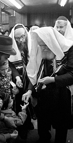
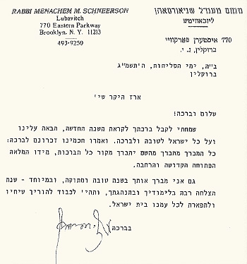

A Nine-Year Old Boy Receives a Personal Letter from the Rebbe
Erez Navon, the only son of Mr. Yitzchak Navon, former President of Israel, recalls the special correspondence he received as a boy from the Rebbe MH”M and the tremendous influence it had upon him.
Translated by Michoel Leib Dobry

Sitting Shiva together with his brother, the former president, was Victor’s son, Rabbi Yosef Navon, a tenured teacher and longstanding member of the Chabad community of Tzfas. He listened closely as many visitors spoke about their personal experiences with the Rebbe, Melech HaMoshiach. Many extolled the Rebbe’s prophetic vision, his wisdom, and his tremendous leadership. However, there was a special story unknown to most of the family, told by Victor’s nephew, the former president’s only son, Mr. Erez Navon, a successful businessman with large real estate holdings. “To this very day, I have kept the letter that I received from the Rebbe when I was a small boy.”

“SEND NEW YEAR’S GREETINGS TO THE LUBAVITCHER REBBE”
“I received this letter in 5743, when I was just nine years of age. My father, sh’yichyeh, was serving as president of the State of Israel. A few days before Rosh Hashanah, I decided to write New Year’s greetings to several prominent people with whom I was acquainted. Among them were then-Prime Minister Menachem Begin, who was a regular guest in the President’s House, and many others of great stature whom I knew during the time I lived in the presidential residence.
“Another person who was a most welcome and regular guest in the house was R’ Shloimke Maidanchik. My father was very fond of him. He was a special Jew, a true Chassid of the Lubavitcher Rebbe. When he saw that I was writing New Year’s cards, he suggested: ‘Why don’t you send New Year’s greetings to the Lubavitcher Rebbe? I’ll make certain to bring it to the Rebbe’s secretaries in New York.’
“I happily agreed, and a short while later, I placed the letter to the Rebbe in R’ Shloimke’s hands. He had already given me a coin from the Rebbe during Chanukah and a dollar bill on another occasion. I have preserved and cherished both of these items to this day.
“I eventually received a correspondence from the Rebbe in reply. As a young boy, I didn’t fully understand the value of this letter, but as the time goes by, I have come to appreciate it more and more.
“The Rebbe wrote to me as follows:
B”H
The Days of Slichos 5743
Brooklyn
Dear Erez sh’yichyeh,
Shalom u’v’racha!
I was pleased to receive your blessing for the coming New Year, may it be good and blessed for all Israel. As our Sages, of blessed memory, have said: All who bless shall be blessed by Alm-ghty G-d, the Source of all blessings, from His Full, Open, Holy, and Broad Hand.
I bless you as well with a good and sweet new year, and especially for a year of much success in your studies and your conduct, and it should be [a source] of honor for your parents, and glory for all our people in the House of Israel.
With blessing,
/the Rebbe’s signature/
“As a young boy, I was very moved by this letter and kept it as a memento. To this day, the letter has helped me on numerous occasions regarding a variety of issues. Here is an example of one such incident:
“When I started my real estate work in Panama, I wanted to bring another entrepreneur into the picture. This led me to a certain wealthy businessman, a Torah observant Jew who lived in one of the capitals of Europe. Today, he is one of my closest and most loyal friends. After knowing him for several years, I decided to show him the Rebbe’s letter.
“My partner was equally enthused by the letter, and it forever changed the nature of our professional discussions. The official businesslike distance was gone, suspicions faded away, and the rapport between us grew, in light of the intense love he displayed for the Rebbe when I showed him the correspondence.
“He was amazed as he looked at the letter, reading the text over and over again. It turned out that he too had received several letters from the Rebbe, and he had even experienced his own amazing miracle, when the Rebbe virtually saved his life. As he told me the story, his voice cracked with emotion as he recalled the events of those days.
“He was a young man learning in one of the yeshivos in New York, when he began to feel intense pains in his back. When the pains intensified, he went in for a series of x-rays, but they failed to reveal the source of the problem. After the doctors had already given up trying, he traveled to the Rebbe to explain the situation and request a bracha. The Rebbe listened and then told him to go to a certain specialist at a hospital somewhere in the United States.
“He didn’t waste any time and went straight to the hospital as per the Rebbe’s advice. However, when he got there and mentioned the name of the specialist, the medical staff told him that this specific doctor had already retired. ‘However,’ they added, ‘he was replaced by a younger doctor who is just as qualified. We strongly recommend that you see him.’ The young man agreed. A date was set for an examination, and he came at the appointed time to the young doctor’s office with all the required medical documents. Before entering the examination room, the receptionist informed him that the doctor for whom he was waiting had just been in an automobile accident, and as a result, he would be unable to see him. However, there was another specialist who had been called in to replace him temporarily: the former department head who had recently retired. In light of the emergency situation, he had agreed to return to work until the injured doctor had recovered. ‘Would you mind seeing him instead?’ the receptionist asked.
“The young man naturally consented. He saw this turn of events as a fulfillment of the Rebbe’s bracha. The specialist checked the x-rays, and after making a thorough check of the man’s back, he informed him that he must go in for an immediate operation. According to the doctor’s diagnosis, there was a malignant tumor on the cartilage between the vertebrae. Apparently, medical science was then incapable of detecting the tumor through x-rays alone. It required the doctor’s experienced and probing fingers to locate the source of the ailment – and not a moment too soon. The operation took place, the tumor was removed, and the back pains quickly became a thing of the past.
“When my business partner told me this incredible story, I realized why he had become so emotional from seeing the Lubavitcher Rebbe’s letter. It was all by Divine Providence…”
*
As was mentioned earlier, this letter helped Erez on numerous occasions, and he becomes deeply moved every time he reads it. “These words coming from a man such as the Lubavitcher Rebbe, who deals with some of the loftiest matters in the world, yet he finds time to reply to a young child’s letter, shows the Rebbe’s true greatness. This is especially so since Chassidim explained to me that during Slichos, the Rebbe limits his letter writing to a minimum. Even when he does decide to write letters at this time, it’s only regarding extremely urgent matters, thereby making this case even more astonishing. In any event, I am quite certain that I did not earn this great privilege in my own merit. It was surely in the merit of my father and my forebears in the Navon family from generations past.”
Nosson Avrohom. "A Nine-Year Old Boy Receives a Personal Letter from the Rebbe." Beis Moshiach, no. 836 (June 6, 2012).